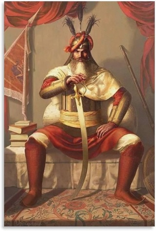

Hari Singh earned the 'Nalwa' title after reportedly killing a tiger at a very young age. His bravery and strength at such a young age earned him respect and admiration in his community.
Hari Singh Nalwa was regarded as the "most feared Sikh warrior" and a legendary leader who brought order to the chaotic troops in Afghanistan.
Afghanistan was a land that even Alexander the Great struggled to conquer. It is said that when Alexander invaded a country, he would send a letter to his mother. By the time the letter reached her, he had already conquered the land. But when he arrived in Afghanistan, he failed to succeed. In response to his mother's inquiry about the delay, Alexander sent her soil from the land and told her to spread it throughout the house. As she did so, many of their loyal soldiers or guards abandoned their allegiance. This incident reflects the cruelty and betrayal that is often associated with Afghanistan’s turbulent history.